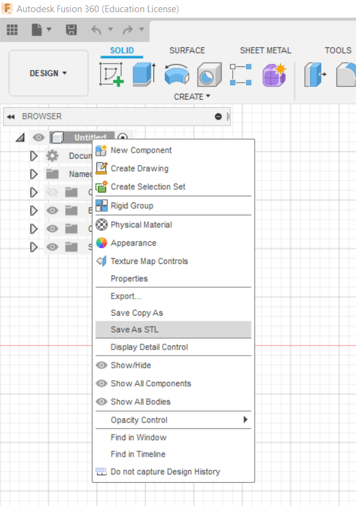
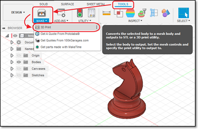
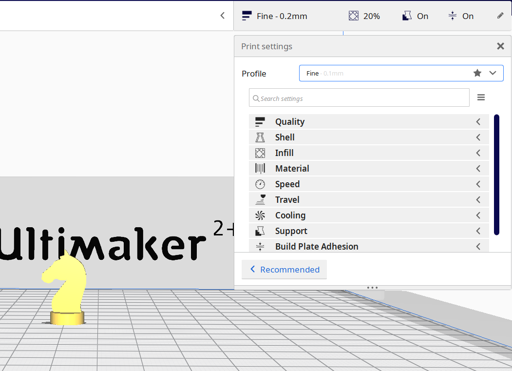

3D Printing (1 June)
Fusion 360 File Save
Before we can start 3D Printing, we first have to convert a a CAD or an f3d file to an STL file. There are multiple ways to do so.
| Method 1: | |
|---|---|
|  |
Direct Save => Object Browser > Select Object > Right Click > Save as STL => Select folder and rename |
{kind=link}
| Method 2: | |
|---|---|
|  |
By 3D Print => Tools > Make > 3D Print |

|
*At the 3D Print Menu => Select Object => Check Preview Mesh => Refinement set to Medium => Output > Send to 3D Print Utility is unchecked |
{kind=link}
Ultimaker Cura
Once that is done, we can now proceed to Cura and open our STL file. The printer type is Ultimaker 2+ with a nozzle size of 0.4 mm and with PLA filament. When that is opened you will notice a couple of things on the left side of the screen. You have the Move, Scale, Rotate, Mirror, Per Model Settings and the Support Blocker. The first thing i did was make my chess piece upright by using the Rotate tool or simply just by pressing R. Then I can start adjusting the different settings.
We were assigned to create a table with at least 3 different settings comparing the print of the knight using changes to the Wall Thickness (typical 1mm), Layer Height (typical 0.2mm), Infill (typical 15%), Support and Bed Adhesion. All these settings can be found under Print Settings > Custom. We then have to determine the approximate print times and amount of filament for each of the settings, include them in our table.
{kind=link}
* Note that only one change is done at a time with the other settings set at default *
| Wall Thickness | 0.5mm | 1.0 mm | 1.5 mm |
|---|---|---|---|
| Print Time | 16 mins | 17 mins | 17 mins |
| Amount of Filament | 1g | 2g | 2g |
| Layer Height | 0.1 mm | 0.2 mm | 0.3 mm |
|---|---|---|---|
| Print Time | 33 mins | 17 mins | 11 mins |
| Amount of Filament | 2g | 2g | 2g |
| Infill | 0 % | 15 % | 0.3 mm |
|---|---|---|---|
| Print Time | 16 mins | 17 mins | 17 mins |
| Amount of Filament | 2g | 2g | 2g |
| Support | With | Without |
|---|---|---|
| Print Time | 17 mins | 16 mins |
| Bed Adhesion | Brim | None |
|---|---|---|
| Print Time | 17 mins | 16 mins |
| Amount of Filament | 2g | 2g |
My Knight Piece File